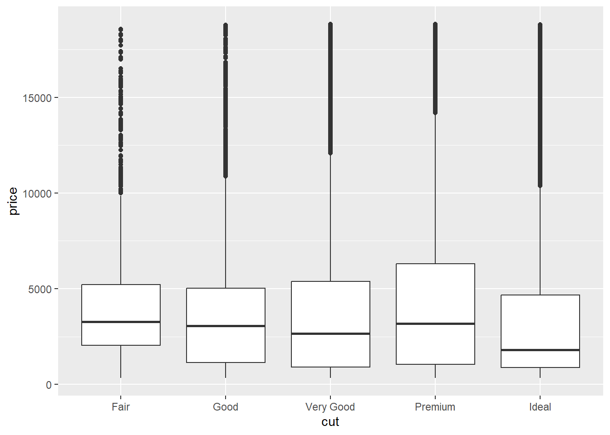
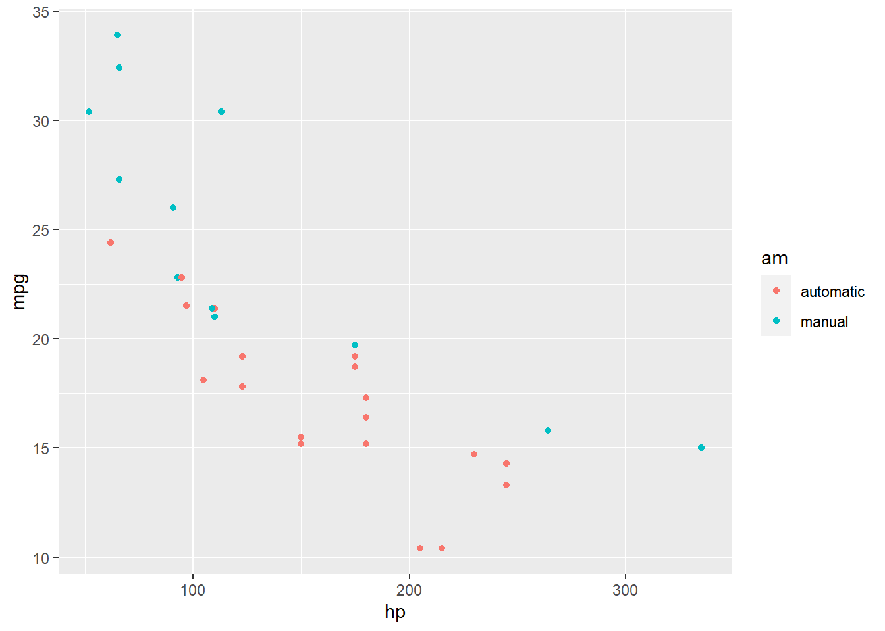
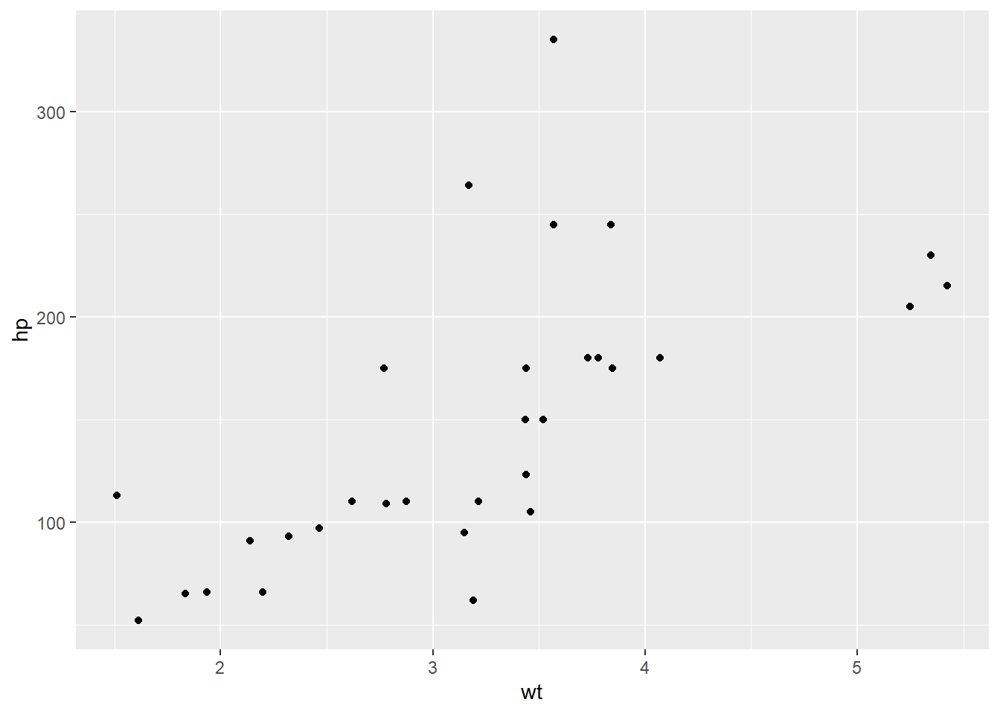

Código
ggplot(diamonds, aes(carat, price)) + geom_smooth() +
facet_grid(~ cut)library(ggplot2)
mtcars2 <- mtcars
mtcars2$am <- factor(
mtcars$am, labels = c('automatic', 'manual')
)
ggplot(mtcars2, aes(hp, mpg, color = am)) +
geom_point() + geom_smooth() +
theme(legend.position = 'bottom')
ggplot(diamonds, aes(carat, price)) + geom_smooth() +
facet_grid(~ cut)Any full width content here.
ggplot(diamonds, aes(cut, price)) + geom_boxplot()
ggplot(diamonds, aes(cut, price)) + geom_boxplot()
knitr::kable(
mtcars[1:6, 1:6], caption = 'A subset of mtcars.'
)| mpg | cyl | disp | hp | drat | wt | |
|---|---|---|---|---|---|---|
| Mazda RX4 | 21.0 | 6 | 160 | 110 | 3.90 | 2.620 |
| Mazda RX4 Wag | 21.0 | 6 | 160 | 110 | 3.90 | 2.875 |
| Datsun 710 | 22.8 | 4 | 108 | 93 | 3.85 | 2.320 |
| Hornet 4 Drive | 21.4 | 6 | 258 | 110 | 3.08 | 3.215 |
| Hornet Sportabout | 18.7 | 8 | 360 | 175 | 3.15 | 3.440 |
| Valiant | 18.1 | 6 | 225 | 105 | 2.76 | 3.460 |
p <- ggplot(mtcars2, aes(hp, mpg, color = am)) +
geom_point()
p
p + geom_smooth()

p <- ggplot(mtcars2, aes(hp, mpg, color = am)) +
geom_point()
p
p + geom_smooth()
# a boxplot of weight vs transmission; this figure
# will be placed in the margin
ggplot(mtcars2, aes(am, wt)) + geom_boxplot() +
coord_flip()# a figure in the main column
p <- ggplot(mtcars, aes(wt, hp)) + geom_point()
p
# a fullwidth figure
p + geom_smooth(method = 'lm') + facet_grid(~ gear)